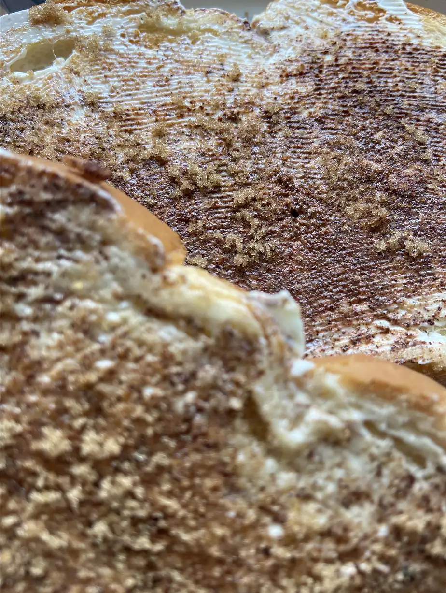

Cinnamon Toast

Description
- cook: 2 mins
- total: 7 mins
- prep: 5 mins
- Servings: 2
Ingredients
- 2 slices white bread
- 2 teaspoons butter
- 2 tablespoons white sugar
- 1 teaspoon ground cinnamon
Directions
- Use a toaster to toast the bread to desired darkness. Spread butter or margarine onto one side of each slice. In a cup or small bowl, stir together the sugar and cinnamon; sprinkle generously over hot buttered toast.